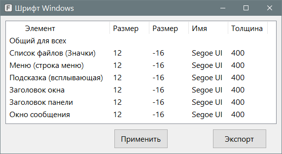

WindowsFont
Назначение
Задаёт шрифт для элементов окна операционной системы Windows

Перед использованием экспортируйте ветку реестра:
HKEY_CURRENT_USER\Control Panel\Desktop\WindowMetrics
Все параметры проверил на своей ОС - Windows10 x64.
Если при запуске программы не отображается размер шрифта, названия, толщина, то категорически не рекомендуется применять, так как если программа не может прочитать данные, то скорее всего она не сможет их и записать, так как те позиции в бинарной строке которые читаются, в эти же позиции и записывается.
При нажатии кнопки "Применить" появляется сообщение с предложением завершить сеанс пользователя, чтобы применить шрифты, то есть эксплорер при перезапуске перечитает значения и запустится с этими значениями шрифта.
Чтобы изменить шрифт, кликнуть дважды или правым кликом, при этом появится диалог выбора шрифта, где можно выбрать размер, имя и толщину шрифта. Толщина выбирается как "полужирный", тогда вместо 400 будет отображаться 700, если выбрать очень жирный, то применится другой шрифт, типа "Segoe UI Bold", а значение останется 400.
Чтобы не настраивать каждый шрифт отдельно нужно кликнуть "Общий для всех", то что будет выбрано применится ко всем элементам списка. А потом некоторые можно подправить. По крайней мере не придётся настраивать 6 шрифтов и 3 параметра для каждого, то есть 18 кликов.
Тест шрифта:
Значки - в эксплорере имена файлов
Меню - главное меню AkelPad, Notepad++
Всплывающая подсказка - навести на кнопку закрытия окна в заголовке, то есть не любая подсказка.
Заголовок окна - очевидно, на любом окне.
Заголовок панели - в Notepad++ открыть какое-нибудь окно настроек плага, в общем окно панели инструментов, у которого заголовок обычно содержит только кнопку закрыть и она более узкая по высоте. Если шрифт не меняется, то обратить внимание на изменение размера кнопки закрытия окна.
Окно сообщения - стандартная мессага, в этой же программе нажать "Применить" и она появится.